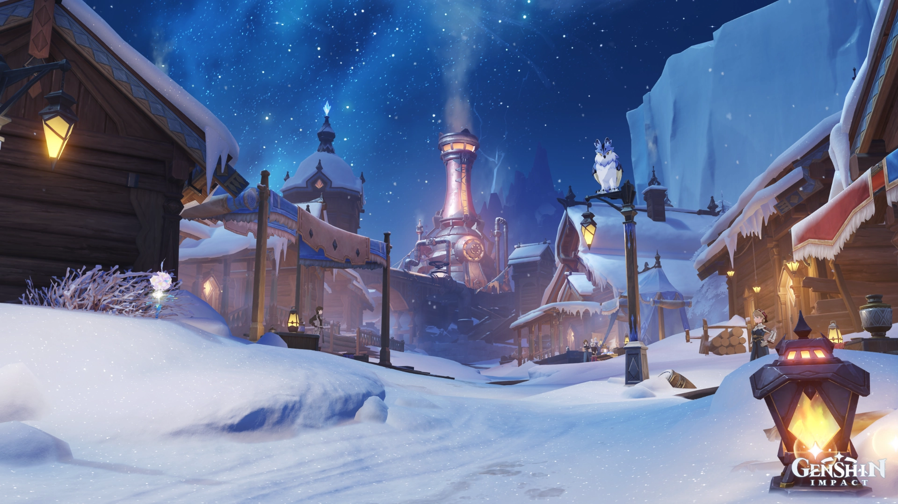
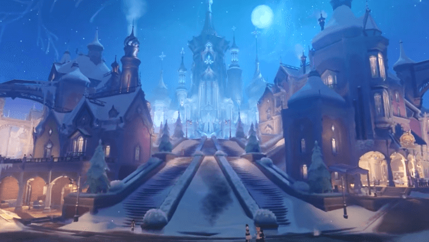
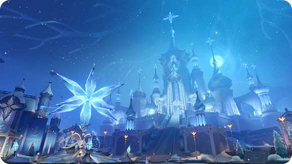
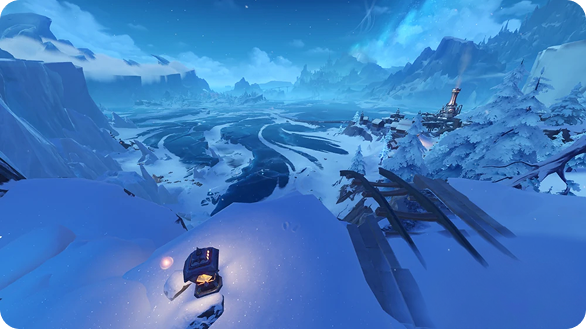
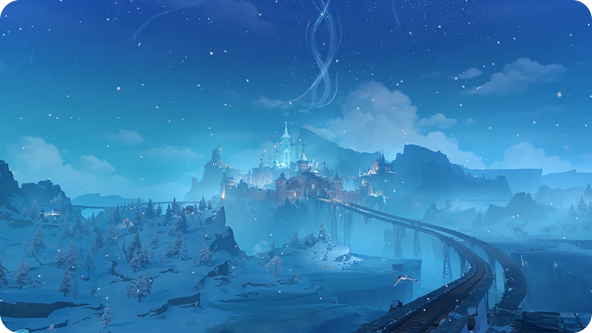

You love snow-covered landscapes, frozen lakes, and magical winter scenery.
"The Eternal White Tundra"
SNEZHNAYA
Duration: 5 days / 4 nights
22,000 PHP
per person
ABOUT SNEZHNAYA
Snezhnaya, known as the Nation of Frost, is a majestic winter wonderland where grand imperial palaces meet cozy alpine chalets beneath dancing auroras. Renowned for its striking frosted architecture, resilient hospitality, and sweeping snow-covered valleys, it offers travelers an extraordinary cold-weather expedition. From glittering ice-carved monuments to warm fireside banquets, every corner of Snezhnaya shines with winter splendor.


You’ll enjoy this trip if...
You enjoy grand palaces, imposing architecture, and cities that feel both majestic and mysterious.
You would rather spend your vacation in the snow than on a sunny beach.
You are intrigued by political intrigue, hidden motives, and stories lurking beneath the surface.
You appreciate destinations with a powerful atmosphere, where every street and landmark feels steeped in secrets and history.
YOUR STOPS
A closer look at the destinations waiting for you on this expedition.

ZAPOLYARNY PALACE OUTSKIRTS
Framing the monumental seat of Snezhnaya's northern capital, the Zapolyarny Palace Outskirts impress travelers with sweeping snow-draped boulevards and towering marble colonnades. Walk along cleared imperial plazas, admire intricate frost-kissed statues, and capture dramatic views of the palace spires rising against the crisp winter sky. Nearby heritage halls and warm winter cafés offer inviting stops to sample rich local delicacies. The grandeur and precision of the capital's architecture create an unforgettable winter spectacle.

FROST-BOUND VALLEYS
Stretching across pristine expanses of untouched snow and pine-clad ridges, the Frost-bound Valleys offer a breathtaking winter carriage journey through Snezhnaya's natural wilderness. Glide past frozen waterfalls, admire glistening ice formations, and breathe in the crisp, tranquil alpine air. When night falls, vibrant ribbons of emerald and violet aurora borealis illuminate the valleys in a dazzling celestial display. Every moment spent in these valleys feels like stepping into a winter fairytale.

GLACIAL OUTPOSTS
Positioned along towering blue-ice cliffs at the edge of the northern tundra, the Glacial Outposts offer adventurous travelers a rare look at Snezhnaya's historic frontier watchtowers. Explore sturdy timber-and-stone fortresses, gaze across vast shimmering glaciers, and learn how northern explorers navigated the sub-zero wilderness. Afterward, warm up inside cozy alpine lodges with steaming mugs of spiced tea beside a crackling hearth. Visiting the Glacial Outposts delivers a thrilling finale to your expedition across Teyvat.
INCLUSIONS
- 4 nights heated alpine chalet (wooden mountain lodge) accommodation in Snezhnaya with daily warm breakfast
- Guided winter expeditions to Zapolyarny Palace outskirts, Frost-bound Valleys, and Glacial Outposts
- Welcome hearty Snezhnayan winter banquet and thermal cloak rental
- Cold-weather transit permits and licensed Zapolyarny Desk branch tour guide
EXCLUSIONS
- Cross-border transit to and from Snezhnaya
- Lunches, dinners, and specialty warm beverages not listed in the itinerary
- Personal souvenirs, private horse-drawn sleigh charters, and travel insurance (required)
SAMPLE ITINERARY
DAY 1 - Arrival & Alpine Chalet Check-In
Check-in at Zapolyarny Desk, cold-weather safety and orientation briefing, afternoon acclimatization walk around the frosted town square, and welcome winter banquet.
DAY 2 - Zapolyarny Palace Outskirts
Morning guided tour along the grand imperial avenues overlooking Zapolyarny Palace outskirts, architectural viewing of the winter monuments, and afternoon museum visit.
DAY 3 - Frost-Bound Valleys Expedition
Full-day guided winter carriage excursion through the scenic Frost-bound Valleys, ice-sculpture viewing, and evening aurora (northern lights) watching from the chalet terrace.
DAY 4 - Glacial Outposts Adventure
Morning expedition to the northern Glacial Outposts, guided tour of historic frontier watchtowers, and cozy evening by the chalet hearth.
DAY 5 - Winter Bazaar & Departure
Warm breakfast at the chalet, free morning for fur-lined crafts and local souvenirs, and checkout.
READY TO EXPLORE SNEZHNAYA?
Base price: 22,000 PHP per person
Duration: 5 days / 4 nights
Package code: SNEZ-07

FREQUENTLY ASKED QUESTIONS
What should I wear for the Snezhnaya tour?
Heavy thermal base layers, insulated winter coats, waterproof snow boots with deep traction, wool gloves, and knit hats—complemented by the thermal cloak included in your package.
What should I bring with me?
Bring your SNEZ-07 booking confirmation, polarized sunglasses (to prevent snow glare), lip balm and moisturizer for dry freezing air, and insulated thermoses.
Is the tour suitable for families and children?
Yes, provided children are dressed in full sub-zero winter gear; heated winter carriages are used for the Frost-bound Valleys excursion to minimize prolonged cold exposure.
How much walking is involved?
Light to moderate walking (2 to 3 hours daily) on cleared town avenues and packed snow trails, balanced with heated carriage transfers and indoor museum stops.
Can I explore on my own during the trip?
Yes. You have free time during the evenings at your heated alpine chalet (wooden mountain lodge) and on Day 5 morning at the Snezhnayan winter bazaar (open-air market) before checkout.
Are there any rules or protocols I should follow during the tour?
Never stray from the licensed Zapolyarny Desk guide during sub-zero excursions, obey all local security perimeters around Zapolyarny Palace outskirts, and report any signs of frostbite immediately.